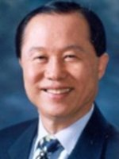
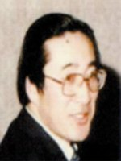
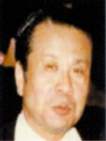
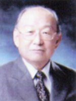
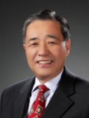
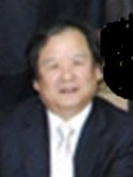
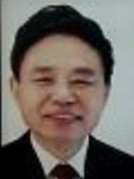
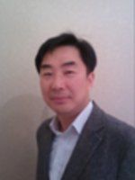

외과동문회
외과동문회는 1976년에 발족했습니다. 현재 회장은 제24대 전병무 동문회장입니다.
역대 동문회장
| 사진 | 대 | 동문회장 | 재임 기간 |
|---|---|---|---|
 | 제1대 | 이한길 | 1976 ~ 1977 |
 | 제2대 | 이사헌 | 1978 ~ 1979 |
 | 제3대 | 김광태 | 1980 ~ 1981 |
 | 제4대 | 김봉오 | 1982 ~ 1983 |
 | 제5대 | 박원혁 | 1984 ~ 1985 |
 | 제6대 | 故 김현근 | 1986 ~ 1988 |
 | 제7대 | 이보연 | 1989 ~ 1990 |
 | 제8, 9대 | 김익명 | 1991 ~ 1994 |
 | 제10, 11대 | 정진원 | 1995 ~ 1998 |
 | 제12, 13대 | 김영춘 | 1999 ~ 2002 |
 | 제14대 | 김옥길 | 2003 ~ 2004 |
 | 제15대 | 김상묵 | 2005 ~ 2006 |
 | 제16대 | 이용배 | 2007 ~ 2008 |
 | 제17대 | 이봉석 | 2009 ~ 2010 |
 | 제18대 | 故 최흥식 | 2011 ~ 2012 |
 | 제19대 | 이준 | 2013 ~ 2014 |
 | 제20대 | 최창순 | 2015 ~ 2016 |
 | 제21대 | 송형섭 | 2017 ~ 2018 |
 | 제22, 23대 | 이종호 | 2019.03 ~ 2024.12 |
 | 제24대 | 전병무 | 2025.01 ~ 현재 |